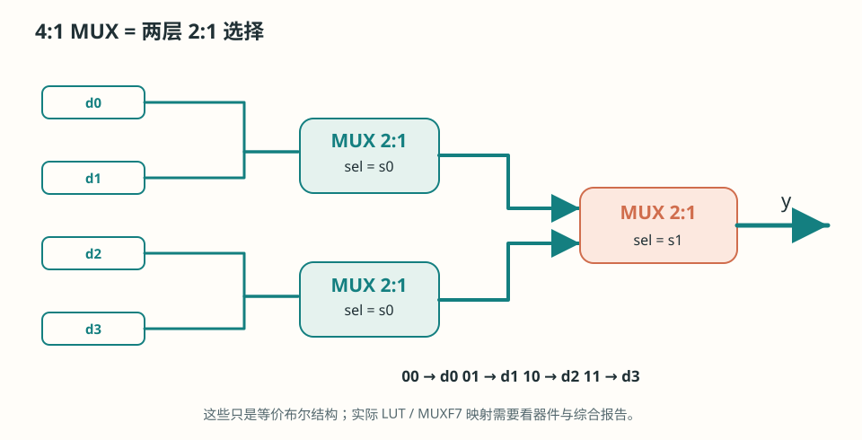
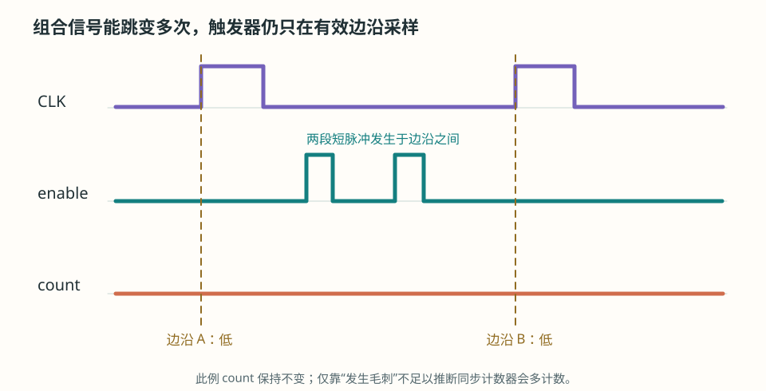

把选择、译码与运算连成电路
从一颗 4:1 MUX 开始，构建译码器和 4 位 ALU，理解毛刺与同步采样的真正关系。
01 / 一颗多路选择器到底在选什么？
一段电路需要从四个 4 位数据通道中选出一个输出。最朴素的设计是一个 4:1 MUX。理解它，应先写出函数和选择表，再考虑 RTL 写法和 FPGA 实际映射。

module mux4 (
input wire [3:0] d0, d1, d2, d3,
input wire [1:0] sel,
output reg [3:0] y
);
always @(*) begin
case (sel)
2'b00: y = d0;
2'b01: y = d1;
2'b10: y = d2;
2'b11: y = d3;
default: y = 4'b0000; // 仿真 X/Z 情况的确定策略
endcase
end
endmodule对于二值 sel，输出严格遵守真值表：00→d0，01→d1，10→d2，11→d3。这里加入 default 是为了消除缺失赋值及明确未知选择值的输出策略；它并不意味着任何 X/Z 都真实存在于内部 FPGA 电路。
?: 和完整的 case 很可能被优化成相同逻辑。AMD 7 系列有 LUT 与专门的宽 MUX 资源；具体映射取决于器件、优化目标和约束。不要写“case 一定比三目运算快”。02 / 译码器、编码器与优先级的差别
译码器把二进制地址变为 one-hot 选择。例如 2 位地址可驱动四路独热输出。若地址为 2'b10，应只有第 2 位为 1（约定最低位为第 0 路）。
module decoder2to4 (
input wire [1:0] addr,
output wire [3:0] onehot
);
assign onehot = 4'b0001 << addr;
endmodule编码器从多路输入生成二进制编号。但如果多个请求可以同时拉高，就需要优先编码器定义明确的优先级，而不是让不同 if 分支无意覆盖。对错误输入条件，应约定 valid 输出并在验证中覆盖。
| 组件 | 输入 → 输出 | 需要确认的规则 |
|---|---|---|
| MUX | 多路数据 → 单路数据 | sel 的每个编码选哪一路 |
| 译码器 | 地址 → 独热选择 | 位序、有效高低、默认情况 |
| 优先编码器 | 多路请求 → 编码 + valid | 多输入同时有效时的优先顺序 |
03 / 从组合电路构造 4 位 ALU
把四种操作交给一个 2 位操作码：00 加法、01 按位与、10 按位异或、11 对 a 取反。规定结果 4 位；只有加法操作才对 carry 有意义，其他时候置 0。
module alu4 (
input wire [3:0] a,
input wire [3:0] b,
input wire [1:0] op,
output reg [3:0] result,
output reg carry
);
reg [4:0] ext;
always @(*) begin
ext = 5'b0;
result = 4'b0;
carry = 1'b0;
case (op)
2'b00: begin
ext = {1'b0, a} + {1'b0, b};
result = ext[3:0];
carry = ext[4];
end
2'b01: result = a & b;
2'b10: result = a ^ b;
2'b11: result = ~a;
default: begin
result = 4'b0;
carry = 1'b0;
end
endcase
end
endmodule假设 a=4'b1111、b=4'b0001、op=00，无符号结果是 16，即 5'b10000；因此 4 位 result=0000，carry=1。这里没有定义带符号溢出标志（signed overflow），不能将 carry 直接用作有符号溢出判断。
项目提供 examples/rtl/alu4.v 与 examples/tb/tb_alu4.v 的穷举测试：4 位 a、b 各 16 种、op 四种，共 16 × 16 × 4 = 1024 个组合。穷举可以有效验证这个小模块的功能，不等于完成目标 FPGA 的物理时序分析。
04 / 毛刺怎样产生，什么时候危险？
组合逻辑的不同路径有不同传播延迟。多个输入同时改变时，可能短暂产生并非稳态真值表所代表的输出，即毛刺或竞争冒险。这个现象不能简单说成“计数器会因此在一个时钟周期中多计几次”。

普通同步计数器的 always @(posedge clk) 在每个有效边沿只进行一次采样：两个时钟边沿之间出现多个脉冲，不会让它在该时钟间隔内重复触发。 但如果毛刺跨越采样窗口，可能采到错误逻辑值或造成 setup/hold 风险；如果把组合毛刺用作真正的时钟、异步复位或异步控制信号，则风险又是另一种。
合理措施取决于风险源：给跨域输入做同步；避免组合生成时钟；对复杂组合结果在适当阶段做寄存与时序约束；对异步信号采用专用握手/同步协议。额外增加一级寄存器并不能自动修复所有逻辑错误或 CDC 风险。
05 / 实际运行、检查综合映射
用 Icarus Verilog 验证四路选择器与 ALU 的所有二值输入组合：
iverilog -g2012 -Wall -s tb_mux4 \
-o /tmp/mux4.vvp examples/rtl/mux4.v examples/tb/tb_mux4.v
vvp /tmp/mux4.vvp
iverilog -g2012 -Wall -s tb_alu4 \
-o /tmp/alu4.vvp examples/rtl/alu4.v examples/tb/tb_alu4.v
vvp /tmp/alu4.vvp期望分别显示 PASS mux4: 4 selects x sample patterns 和 PASS alu4: 1024 combinations。任何比较失败都会触发非零退出状态；脚本化 CI 因此能阻止明显的功能回归。
真正讨论 LUT 数目或临界路径，需要先指定 FPGA 器件、时钟约束与综合/布局布线版本，再读综合报告和 STA 报告。可对等价的 case 与 ?: 版本作约束一致的 A/B 实验，比较而非预设结果。
思考：ALU 的 carry=1 是否代表“有符号结果溢出”？
不是。carry 是无符号加法的最高位进位。有符号两补码溢出需要考虑操作数符号与结果符号。例如 4 位有符号 7+1，结果位型 1000（表示 -8），虽然 signed overflow 发生，但最高进位可以为 0。